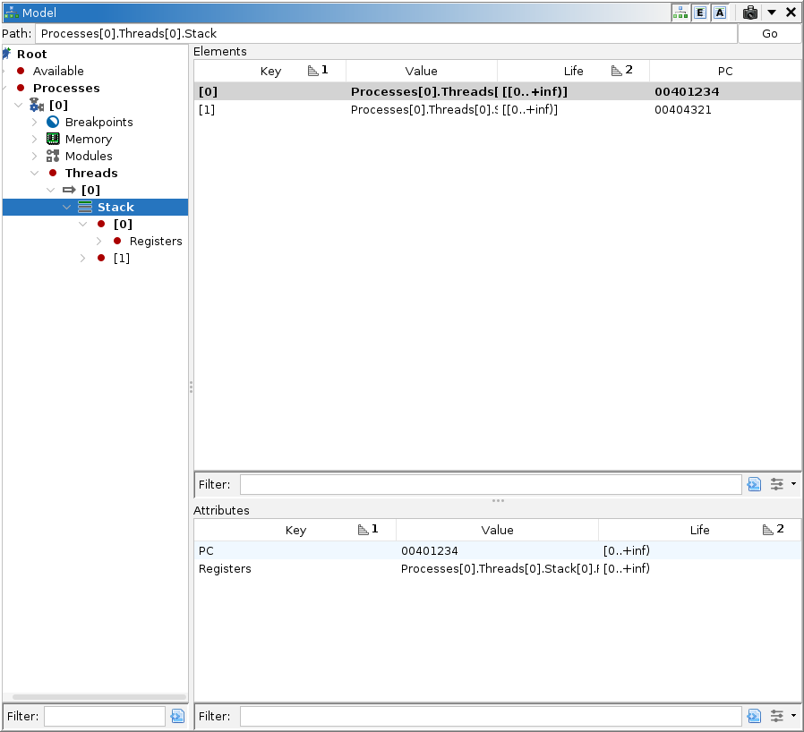

Debugger: Model Objects

The Model window permits the user to inspect the trace's object database. It also provides
access to some target-defined actions that might not otherwise be accessible from the rest of
the Debugger UI. The object database is a generic description of everything present on the
target and their states. Many of the other windows, e.g., Modules, Regions, Threads, are just
specialized versions of this window.
The target describes the structure of its object directory using a model schema.
The Debugger UI uses the schema to navigate this directory and find relevant objects. For most
mundane targets, the Model window is not necessary, but may still be preferred by some users.
For targets implementing features not natively built into the Debugger, the Model and/or
Terminal windows are essential.
The model window consists of three togglable panes: Objects
Tree, Elements Table, and Attributes Table. At the top is a path entry field, which identifies
the current object. Each pane can be hidden, and the whole window can be cloned, allowing users
to customize multiple views. When docked to the side of the Debugger UI, it is common to hide
both tables, so that the Object tree is not obscured. Users who like to see register values in
the tree should enable Show Primitives in Tree.
Objects Tree Pane
The Tree pane on the left displays the complete object directory. The back-end debugger may
name its Root node to better describe itself. All nodes below that are defined by the target,
but some common nodes are: Available, Processes, Breakpoints, Memory, Modules, Threads, Stack,
and Registers.
- Available: This node typically lists running processes on the debugger's host to
which it may attach.
- Processes: This node lists all current target processes to which the debugger is
currently attached. Most often, there is only one.
- Breakpoints: This node may appear as a child of the root or of each target
process. It lists the breakpoints for the entire session (in the former case) or for the
target process (in the latter case) or some combination of both. Some targets distinguish
between a breakpoint specification and its locations. If that is the case, the locations
should be children of their specification. If breakpoints are specified for the entire
session, then each target process should also have a Breakpoints node whose children are
links to the locations within that target.
- Memory: This should always appear as a child of a target. It lists the memory
regions, if known, in that target. For processes, this is the memory map. Only those
addresses in a listed region are valid. For targets where the memory map is not known or
cannot be retrieved, there may be a single region covering the entire address space, simply
to ensure the Dynamic Listing and Byte viewers are populated.
- Modules: This should always appear as a child of a target process. It lists
modules known to be loaded into its memory. Some back ends may also present a Sections
node for each module, which lists the sections of that module. Reporting sections for all
modules is often expensive, so each Sections node may be empty until explicitly loaded or
refreshed.
- Threads: This should always appear as a child of the target. It lists all the
threads executing in the target. Even if the target's platform does not support
multi-threading, this node is typically still present, but will list only the one
thread.
- Stack: This node is not always present, depending on whether the back-end debugger
supports unwinding the stack. Most do. It should always appear as a child of a thread. It
lists the stack frames for that thread, where the topmost, i.e., current or innermost, frame
is numbered 0. Each successive unwound frame is numbered 1 and counting up.
- Registers: This node may appear as a child of a thread or frame. It lists the
registers and their values. In contrast to the Registers window, the values displayed here
have not been mapped into the trace's Sleigh language. The names and values are
determined entirely by the back end. As the child of a thread, the values are the current
register values for that thread. The PC value may be adjusted by the debugger to reflect its
logical value instead of its actual value. As the child of a frame, then frame 0's values are
the current register values for the containing thread. The values for each successive frame
are those recovered by the debugger unwinding the stack. Please see the back-end debugger's
documentation for any caveats that may apply. Unwinding is often an imperfect science.
NOTE: Because targets often record register values as primitive attributes, they may
not appear in the tree pane by default. Use the Attributes pane, or toggle Show Primitives in Tree in the local drop-down menu.
Node Display and Selection
Most often, each node is displayed by its name. A target may specify the display text,
usually to make it match what appears in its terminal or to present a useful summary of that
object. When a child is a link, the tree displays its key followed by its value in italics.
When a child is a primitive, it is not displayed in the tree by default. This can be toggled
using Show Primitives in Tree, in which case, it displays the
key followed by the primitive value. Clicking an object will select it and cause the other two
panes to display the detailed contents of that node, including its primitive values, if any.
Double-clicking an object may have one of 3 effects, in order of precedence:
- If the object is activatable, i.e., focusable or selectable, the object will be
activated. This is typically the case for sessions, targets, processes, threads, and frames.
The back-end may further refine the selection. E.g., when activating a process, it may choose
a thread and select its top frame. This becomes the current context throughout the Debugger
UI, often including the back end's command-line interface.
- If the object is togglable, the object will be toggled. This is typically the case
for breakpoints and maybe their locations. NOTE: The Breakpoint manager, which is
otherwise responsible for all breakpoint interactions in the Debugger UI, prefers to toggle
breakpoint locations rather than specifications. Beware that toggling a specification via the
Model window may put the UI in an unexpected state. The Breakpoint manager will attempt to
toggle the location, despite its specification being disabled, which may prevent it from
having any effect. If you seem to be having trouble toggling a breakpoint elsewhere in the
UI, check and enable the breakpoint specification here or in the command-line interface.
- If the object represents an address or range, this will go to that address
in the Dynamic Listing. If it's a range, it will go to the minimum address and select the
range. This is typically the case for memory regions, modules, sections, and breakpoint
locations; however, breakpoint locations are often togglable, which supersedes go-to.
Right-clicking an object may present a context menu of target-defined actions. Expanding an
object will display its children. If the target provides a refresh method for the
object, expanding it will invoke that method. To suppress the refresh, hold SHIFT when
expanding.
Elements Table Pane
The Elements pane on the top right displays the elements of the current object. Typically,
this is the object selected in the Tree pane. Each element is displayed in a row. In most
cases, these are canonical values. That is the parent's path plus the value's key
gives the child object's path. If not, then the value is a link. Links are fairly rare, but may
happen, e.g., to list a target's breakpoint locations when the specifications are kept in a
per-session container. (GDB's model exhibits this schema.) In rarer cases, elements may be
primitive values. There are 4 standard columns plus any number of target-defined columns:
- Key - This is the index used to access the element from its parent.
- Value - This is the value of the element.
- Life - This is the "life" of the object. Trace databases record changes to the object
model over a timeline of snapshots. Many objects, especially containers, have a life from 0
to infinity. Others, e.g., threads will have lives indicating their first and last
observations. Rarely, an object may have multiple disjoint lifespans.
- Plot - This is a visual plot of the "life" of the object. It is hidden by default. The
header for this column contains a caret that shows the Debugger UI's current snapshot within
this plot. Clicking or dragging in that header while in Control Trace or Control
Emulator mode will
activate the clicked snapshot, allowing quick navigation through time. To suppress this
behavior, i.e., so that you can reposition or sort the column, hold SHIFT while
clicking or dragging.
- [Attribute] - Each relevant attribute described in the schema generates a column.
The target determines which are visible and hidden by default. Right-click the table header
to view all available columns. The available columns will vary depending on the current
object.
Row, Cells, and Selection
Clicking a row selects it and causes the Attributes pane to display the selected object's
attributes. Double-clicking a row behaves similarly to the Tree pane. A key difference is when
double-clicking a specific cell. If it is an address or range, the UI will go to that address
or range. If it is an object (or a link), then the UI will activate, toggle, or go to that
object. If no such per-cell action is applicable, then the UI will activate, toggle, or go to
the object represented by the row. Right-clicking may present a context menu of target-defined
actions.
Attributes Table Pane
The attributes pane on the bottom right displays the attributes of the current object, or
the selected element. If the Object tree's selection changed last, this displays the attributes
of the object selected in the tree. Likewise, if the Elements table's selection changed last,
this displays the attributes of the selected element. Each attribute, whether or not described
in the schema, is displayed in a row, unless marked as hidden by the target. For canonical
values, the parent's path plus the value's key gives the child object's path. Linked objects
are also possible, but primitive values are most common. The columns are:
- Key - This is the name used to access the attribute from its parent.
- Path - This is the full path to the attribute. It is hidden by default.
- Value - This is the value of the attribute.
- Life - This is the "life" of the attribute entry. This differs slightly from the Life
column of the Elements table. Disjoint entries having the same key are not merged. Thus, the
column displays a single span for each row.
- Plot - This is a visual plot of the "life" of the attribute. It is hidden by default. The
header for this column behaves the same as it does in the Elements table.
Row Selection
Clicking a row selects it, but otherwise has no effect. Double-clicking a row behaves
similarly to the Object tree pane. Right-clicking may present a context menu of target-defined
actions.
Typography
This window and most of the Debugger UI adheres to the following typography:
- Bold face is used when the displayed item is (or is an ancestor of) the Debugger's
current object. Note that the Model window's current object, i.e., that selected in the tree,
is not necessarily the same as the Debugger's.
- Red color is used when the displayed value has changed. Since
when? The value is compared between the current and previous trace-snapshot pairs. "Previous"
meaning the pair that were current immediately before the current pair were activated. The
overall result is: 1) When controlling a live target, the values changed since the last
event, e.g., step completed, are displayed in red. 2) When controlling a trace, the values
between the last two visited snapshots are displayed in red. 3) When controlling an emulator,
it depends whether the last action was navigation or stepping.
- Primitive values are displayed as strings. In particular, numbers are displayed in
decimal.
- Addresses and ranges are displayed in hex, possibly prefixed with a space name.
- Primitive arrays are displayed as colon-separated hex, except boolean arrays, which are
displayed as colon-separated Ts and Fs.
- Objects are displayed as their canonical paths, in some cases using italics for
links.
Actions
See the specific launcher and/or back end's documentation for target-defined actions. Those
actions are only available when the current trace has a live target. Several other actions are
available for navigating and configuring the Model window.
Follow Link
When right-clicking a node or row that represents a link to another object, this action will
make that object this window's current object. That is, it will select it in the tree and cause
the tables to display its contents.
 Show Objects Tree
Show Objects Tree
This button toggles the display of the Objects tree pane.
 Show Elements Table
Show Elements Table
This button toggles the display of the Elements table.
 Show Attributes Table
Show Attributes Table
This button toggles the display of the Attributes table.
Limit to Current Snap
By default, all panes will only display values that are effective for the Debugger's current
snapshot. For diagnostics, or to scrutinize a target's history, enabling this toggle will cause
the panes to display all values recorded in the trace regardless of the current snapshot. Be
careful using this when selecting or expanding objects whose contents are volatile, since this
will try to render all values ever contained by that object.
Show Methods in Tree
Some targets have their own notion of an object model, e.g., dbgmodel.dll. These
models may present methods, that by their nature, are not suitable for registration at
connection time. Instead, they are reflected and invoked using generic methods. This is an
uncommon case, and even then, users may not be interested in seeing such methods enumerated in
the tree. This toggle allows users to have them displayed in the tree.
Show Primitives in Tree
This button toggles the display of primitive values in the tree. When the tables are active,
the tree typically serves only to navigate among objects, and so it need not display primitive
values. If you prefer to have only the tree, then consider displaying primitives in the
tree.
Show Hidden
Targets specify a schema for the object model. The schema describes the expected objects,
types, attributes and locations for various components of the session. When describing an
attribute, the target can specify whether or not it is hidden. Hidden attributes are not
displayed in any pane by default. This toggle forces hidden attributes to be visible. For all
panes, new nodes and rows are added for any hidden items. For the elements table, this may also
add a multitude of new columns.
 Clone Window
Clone Window
This copies the Model window in its current configuration to a new Model window. The cloned
Model window is disconnected from the rest of the Debugger UI. The main windows is the
only connected window. When an object or snapshot is activated in the Debugger, the
connected window tracks along, setting its current object and/or snapshot to match the
Debugger's. Any disconnected windows remain unaffected, but changes to the model itself are
still displayed.